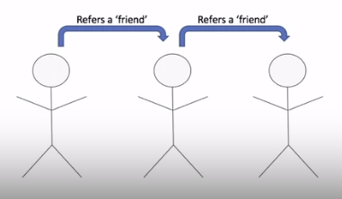
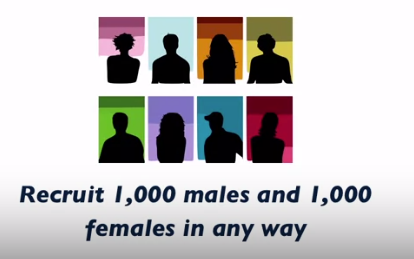

概率抽样之后就是非概率抽样啦，week 4-3 终于来了，词穷，在线征集如何写摘要
Start with Me | Coursera - Understanding and Visualizing Data with Python week 4-3 - Non-Probability Sampling
Lecture Overview
- What defines a non-probability sample?
- Common examples of non-probability samples
- Intro to two common population inference methods
- Example of non-probability sampling : Twitter data
Non-Probability Sampling
What Are Non-Probability Samples?
- Features of Non-probability samples :
- Probabilities of selection can't be determined for sampled units
- No random selection of individual units
- Sample divided into groups(strata) or clusters, but clusters not randomly sampled in earlier stage
- Data collection often very cheap relative to probability sampling
非概率抽样的特征
选择概率无法确定
所以无法计算非概率样本中包含的个人或更普遍的人群被选入样本的概率
没有随机选择个体单位
所以无法控制最终产生非概率样本中样本的随机选择机制
样本有时候可以被划分为群组，但同样沿着没有随机选择的思路，群组在早期阶段也不会被随机抽样
数据收集往往非常便宜
这也是非概率抽样的一大优势
Examples of Non-Probability Samples
Studies of volunteers
The researchers is just looking for volunteers, they doesn't have any control over whose probabilities of selection will be included in the study or who is ultimately going to be in the sample.
There's no frame, there's no list.
Opt-in / Intercept web surveys
Snowball samples
Convenience samples
Quota samples
Common Feature : Probabilities of selection cannot be determined a priori!
非概率抽样的例子
研究志愿者
临床试验、学术机构进行的小型研究
你可能会看到一个传单，上面写着 “你是否有XXX特征” 然后会看到一个电话号码/邮件，然后你打电话说“我有兴趣成为这项研究的一部分”
研究者只是在寻找志愿者，并不能控制谁的选择概率会被纳入研究，或者谁最终会被纳入样本
没有框架，没有名单，研究者只是在寻找志愿者加入他们的研究
网络调查
- 在网站上看到一个邀请你来完成一个调查/意见调查，你决定加入这个特定的调查
- 没有选择的概率，没有随机选择
滚雪球抽样

- 通过人们将其他人推荐给实际数据收集来增加样本
- 有人可能会参加一项研究，然后他们可能会把这项研究告诉他们的朋友，那个朋友可能会参加
- 然后，这个朋友又把这项研究告诉了朋友，这样就像滚雪球一样建立起来了
- 没有选择的概率，都是来自于特定研究的口碑
方便抽样
- 当大学教授希望进行研究，可以从一些课程中选择学生，或者作为课程的一部分要求
配额样本

- 有一些目标，希望达到你的样本量
- 比如，希望招募2000人，1000名男性，1000名女性，并且以任何可能的方式，让每个子群中的这么多个人成为志愿者，就达到了寻找的配额
- 没有选择的概率，没有随机选择，只是想尽你所能达到那些特定的目标
这些例子都有一个共同的特点 没有选择的概率，只是试图收集数据
What is The Problem？
- Non-probability sample -> no statistical basis for making inference about larger population from which sample selected
- knowing probabilities of selection -> can estimate features of sampling distribution if were to take many random samples using same design
- Sampled units not selected at random -> strong risk of sampling bias
- Sampled units not generally representative of larger target population of interest
- "Big data" often from non-probability samples
问题在哪？
这个问题就是我们对样本中不同的个体是否有选择的概率
在非概率样本中，没有统计学的基础来对样本中所选取的更大的人群进行推断，因为没有控制选择的概率，也不使用随机选择
如果知道选择的概率，可以估计抽样分布的特征（如果用同样的设计抽取许多随机样本）
非概率样本的一个关键问题是，被抽样单位不是随机选择的，整体来说，以上的例子中没有随机选择的情况发生，意味着有非常大的抽样偏差的风险
例如，在网站调查中，可能只得到那些真正有兴趣访问该特定网站的人，而这并不是你可能感兴趣的所有人的代表性样本
非概率样本中的被抽样单位一般不能代表较大的人群
大数据很多的问题是产生于非概率样本
例如，人们研究Twitter上的几百万条推文
所以在分析大数据时，必须非常小心，充分了解这些数据的来源
What Can We Do?
- Many data sets arise from non-probability samples
- Two possible approaches:
- Pseudo-Randomization
- Calibration
我们可以做些什么?
如果有非概率抽样，是不是一切都亏了？
相比较概率抽样来说，非概率抽样非常便宜，所以它们是研究人员的热门选择
很多数据集都是由非概率样本产生的
那能不能在这些数据的基础上对更大的人群进行一些推断？
两个可能的方法
伪随机化
稍微做一点工作，就会把非概率样本当成概率样本来对待
校准
涉及到基于模型的调整
Population Inference Approaches
Pseudo-Randomization Approach
- Combine non-probability sample with a probability sample that collected similar measurements
- Estimate probability of being included in non-probability sample as a function of auxiliary information available in both samples
- Treat estimated probabilities of selection as "known" for non-probability sample, use probability sampling methods for analysis
Calibration Approach
- Compute weights for responding units in non-probability sample that allow weighted sampled to mirror a known population
- Limitation : if weighting factor not related to variables of interest -> will not reduce possible sampling bias
伪随机化方法
- 把从一个非概率样本中得到的数据和另一个概率样本结合起来
- 两个样本需要收集相似的测量值
- 在这种方法中，会先从非概率样本和概率样本的两个数据集中找到那些共同的测量值、共同的变量，任何把两个数据集叠加在一起
- 会从字面上把它们互相加起来，如下图
估计被纳入非概率样本的概率，作为两个样本中可用的辅助信息函数
可能会有额外的社会人口统计变量，如性别、种族、民族、年龄、教育，或者其他一些社会经济数据，这些数据在我们的两个样本中都可以得到
当同时考虑两个数据集时，使用所有这些信息来确定非概率样本中每个人被纳入非概率样本的概率
然后，使用前面讨论过的概率抽样方法进行分析
在这种方法中，会有一个指标，如果在数据集中的非概率样本中，你会得到一个1；在概率样本中，会得到一个0
用逻辑回归的方法来估计在非概率样本中的概率，作为所有这些其他变量的函数
假设估计的选择概率是已知的，使用概率样本的方法将这两个数据源结合在一起
校准方法
计算非概率抽样中单位的权重，使加权抽样能够反映已知的样本
假设在你的网络调查中，70%的参与者是女性，30%是男性，在你的非概率样本中，十个受访者中有七个女性
但是在目标人群中50%是女性，50%是男性
所以要为非概率样本制定权重，这些权重实际上会被用于分析和计算估计
最终会降低女性的权重，因为非概率样本中女性太多，所以希望在应用权重之后，看起来更像已知的人群50：50分布
限制
如果加权因素与感兴趣的变量无关，将不会减少可能的抽样偏差
Twitter Example : Non-Probability Sample
API to extract info from several hundred thousand tweets and indicator of support for President Trump computed
- Probability of a tweet being selected cannot be determined
- Twitter users not a random sample of larger population
- Lots of data, but
- high potential for sampling bias
- lack of representation : may only capture people with strong opinions
Test - 多选
What prevents a simple random sample of tweets from being representative of the opinions of all adults in the U.S. population? Please select all responses that apply.
A. Twitter users decide to become Twitter users, and are not selected at random from the larger U.S. population.
B. A simple random sample is not a probability sample.
C. Twitter users may not necessarily be adults.
D. Twitter users may not necessarily be living in the United States.
E. We need to know the size of the simple random sample before answering this question.
参考答案
ACD
Simple random samples are probability samples, and any size sample of tweets would still be limited by the same problems of representation and sampling bias.
What's Next?
- Sampling distributions and sampling variance ~ how to estimate features of these distributions based on only probability sample
- Examples of making population inferences based on type of sample selected
- Introduce model-based approached to analyzing data
本博客所有文章除特别声明外，均采用 CC BY-SA 4.0 协议 ，转载请注明出处！